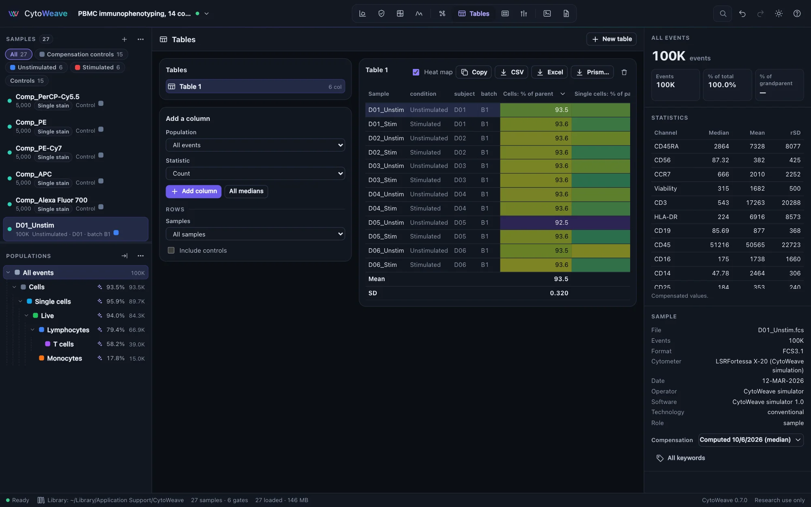
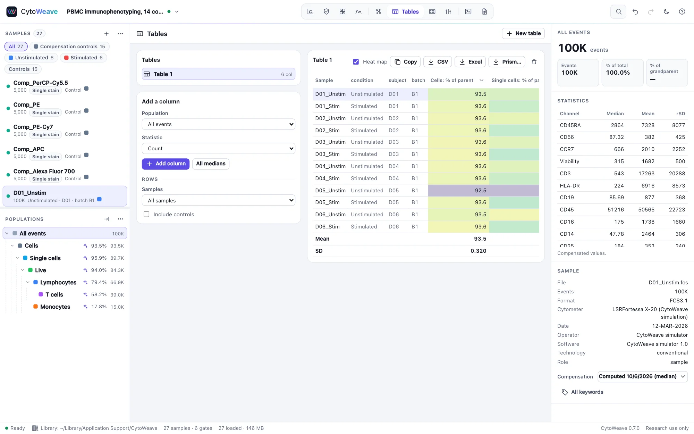
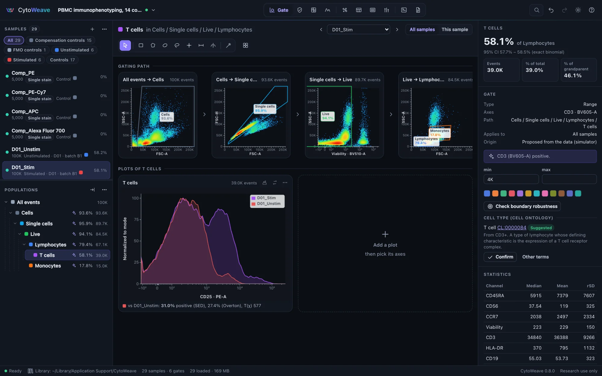
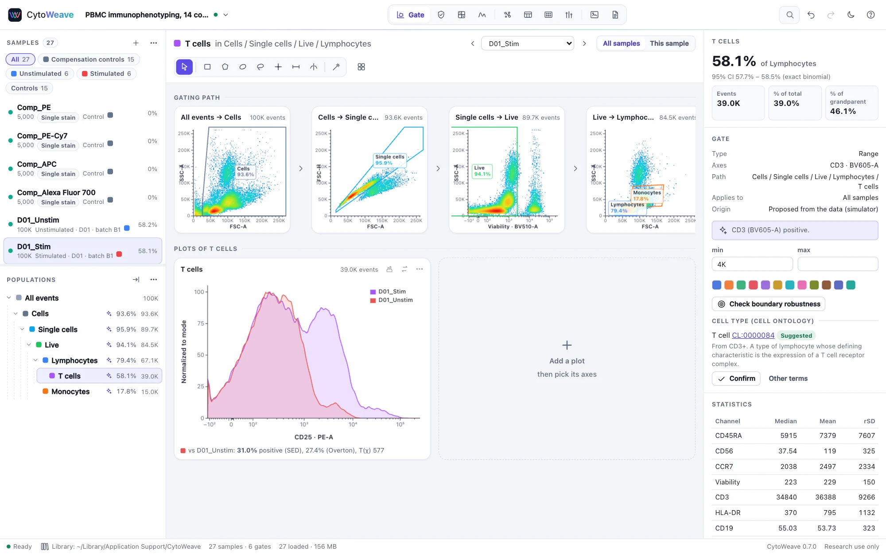
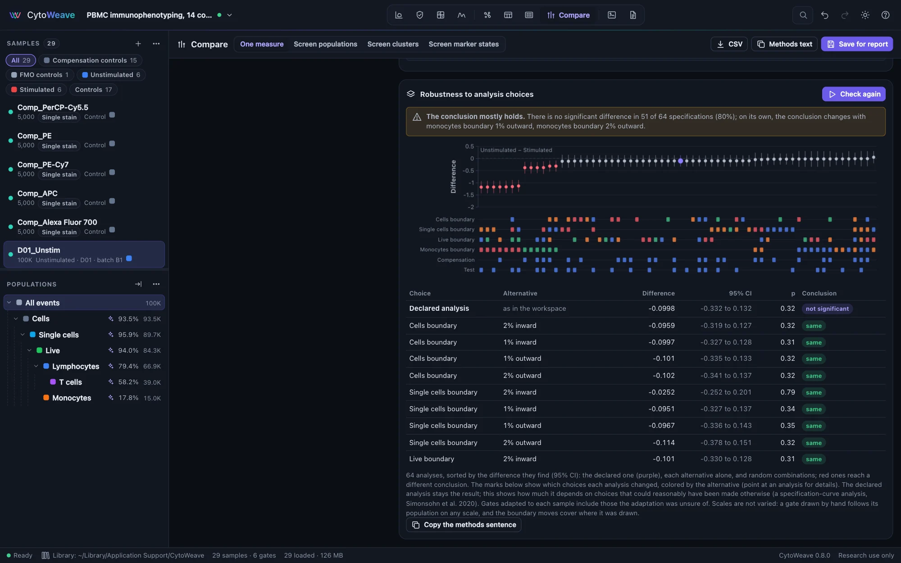
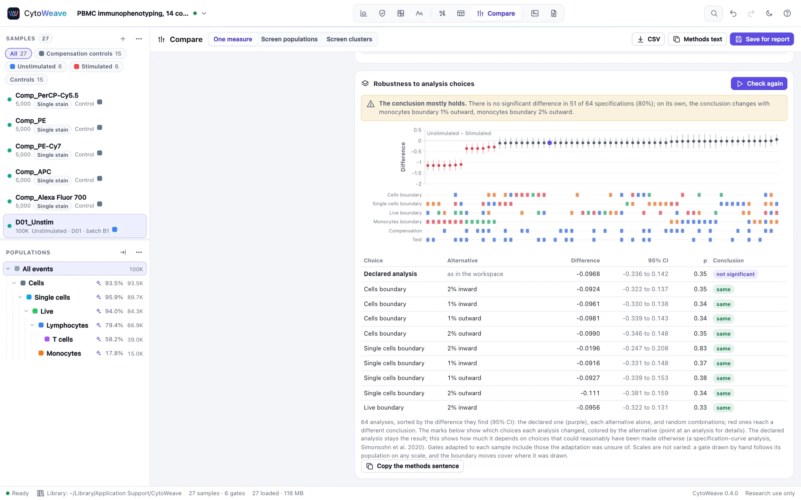
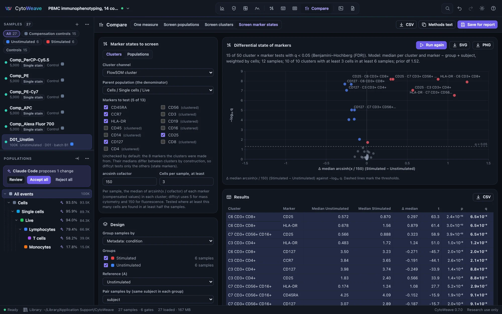
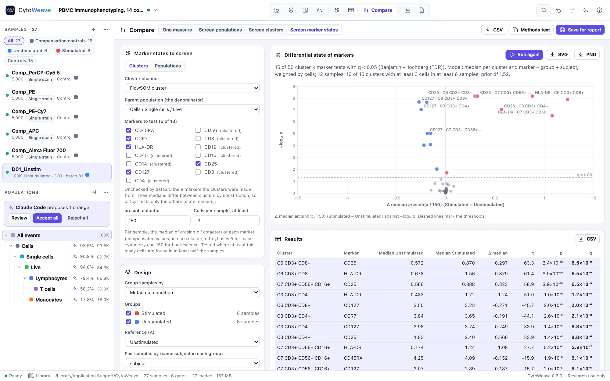

Tables and comparisons
Turn populations into numbers for every sample, and compare groups of samples with a test chosen from the design rather than by habit.
Tables


A table has one row per sample and one column per statistic. Create a table of every population builds the usual frequency table in one click: every population as a percentage of its parent. To build your own:
- Click New table, or start from the frequency table.
- Under Add a column, choose a Population and a Statistic, plus a Channel, Relative to population, or percentile or threshold where the statistic needs one. Click Add column, or All medians for the median of every fluorescence channel of the population.
- Under Rows, choose the samples (all, or a group), and whether to include controls.
| Kind | Statistics |
|---|---|
| Counts and frequencies | Count; % of parent, grandparent, total or any ancestor; concentration per µL (from $VOL); absolute count per µL from counting beads (below) |
| Location | Median, mean, geometric mean, mode |
| Spread | SD, robust SD, CV, robust CV, median absolute deviation (MAD) |
| Distribution | Minimum, maximum, any percentile, % above a threshold |
| Rare events | Lower and upper 95% limits of the count (exact Poisson) and of the % of parent (exact binomial); counting CV |
| Against a control sample | % positive by SED and by Overton subtraction; probability binning's T(χ) and % positive; the Kolmogorov–Smirnov D (below) |
The robust SD is BD FACSDiva's: half the range around the median that holds 68.26% of the events, (P84.13 − P15.87) / 2, and the robust CV is 100 × that over the median. FlowJo 11's Robust SD is 1.4826 × the median absolute deviation instead; for a symmetric population the two agree, for a skewed or two-peaked one they do not. To reproduce FlowJo's, multiply the median absolute deviation by 1.4826. Medians match FlowJo's exactly.
Show a table as a Heat map, Copy it as TSV to paste into a spreadsheet, or save it as CSV. A column's menu renames, moves or removes it, sends it to Compare between groups, or adds detection limits. Frequencies in the inspector carry an exact 95% binomial confidence interval.
Excel and Prism
- Excel writes every table to one workbook (
.xlsx), a sheet per table, each value in full precision (Tables shows them rounded) and, for a column with detection limits, each value's status. Four more sheets say where the numbers come from: Columns (each column's population path, statistic, channel, control sample, counting beads, dilution, and the limits found), Samples (file names, SHA-256 checksums, event counts, compensation, instrument and acquisition date), Populations (the gating hierarchy) and About (the workspace, the export and the methods paragraph with its references). The workbook is also in the Workspace menu's exports and the command palette. - Prism… writes the table as a GraphPad Prism project (
.pzfx): one data table with a row per sample and a column per statistic. Choose an annotation to group the samples by, such as condition, and each statistic also gets a column table with a column per group and its samples down it, the layout Prism's t tests and one-way ANOVA take. Samples without the annotation are left out of the grouped tables, and the export says how many.
Both load the samples a table needs first. To put statistics on slides beside plots, add a Statistics item to a figure.
Absolute counts
Cells per µL of the sample, from counting beads (BD TruCount, CountBright and the like) added to each tube. Gate the beads (they are small on forward scatter and bright in every fluorescence channel), then add a column with the statistic Absolute count (/µL, counting beads), which asks for:
- the counting beads population;
- the beads in the tube: the number on the lot (TruCount tubes), or the beads per µL times the volume of beads added (CountBright);
- the µL of sample in the tube;
- the dilution factor, the same for every sample or read from a sample annotation (
4or1:4).
Cells per µL = cell events ÷ bead events × beads in the tube ÷ µL of sample × dilution (Brando et al. 2000). Its precision is set by both counts: the CV is about √(1/cell events + 1/bead events), so 1,000 beads already limit it to 3%. Instruments that record the volume they acquired ($VOL) give Concentration (/µL) without beads, which takes the same dilution factor.
Comparing with a control sample


How much of a stained sample lies above its FMO, or of a stimulated sample above its unstimulated control, when the two overlap too much for a gate? Choose one of the statistics against a control sample: the column then asks for the Control sample and, if it is not the same population, the Control population. Each sample's population is compared with the control's on the column's channel.
| Statistic | What it measures |
|---|---|
| % positive (SED) | The share of the sample's events that are positive, by Bagwell's enhanced normalized subtraction, which FlowJo calls SED. It estimates the part of the positive population that overlaps the negative one, so it stays close to the true share when the two overlap. |
| % positive (Overton) | Overton's cumulative subtraction: the largest gap between the control's and the sample's cumulative distributions, which is the Kolmogorov–Smirnov D in one direction. Exact for well-separated populations, it underestimates where they overlap. |
| T(χ) (probability binning) | Roederer's metric: the control's events split into bins of equal counts and the sample's counted in them. Above 4, the distributions differ (p < 0.01); about 0 for two samples of the same cells. |
| % positive (probability binning) | The share of the sample's events in excess of the control's in those bins. |
| K-S D | The largest difference between the two cumulative distributions, in either direction. With tens of thousands of events any difference is significant, so its p-value says little; D itself is a fair size of the difference. |
All five come from the events' order, so they do not change with the axis scale. They assume the sample holds the control's population plus, perhaps, a positive one: a whole population shifted brighter (a voltage change, a different autofluorescence) reads as positive cells. Put such columns in Compare like any other, or choose the statistic there directly with its control.
On a histogram, overlay the control (More → Overlay other samples): the plot's sample is compared with each overlaid one and the result shown under the plot.
On simulated tubes with known shares, SED came within 2 points of the truth from 5% to 40% positive, while Overton fell 2–8 points short where the populations overlapped; CytoWeave's probability binning gives the same bins and statistic as the R package flowStats. See Validation.
Rare events
A rare population's frequency is only as precise as the number of its events: 100 events give a 10% CV, 25 events a 20% CV (Poisson counting). For a population of fewer than 10,000 events the inspector shows its counting CV, the exact 95% interval of the count and, below a 10% CV, how many events of the parent a 10% CV would take. In Tables, the lower and upper 95% limits of the count and of the % of parent are statistics of their own.
Detection limits
Whether a small value is real depends on what samples without the population show. A count or frequency column's menu → Add detection limits asks for:
- Blank samples, with none of the population: healthy donors for a disease marker, FMO controls, unstimulated samples for a response.
- Low-level samples (optional), with a little of it, for example a dilution of a positive sample; replicates of one level can share an annotation.
- The target CV for quantification (20% by default).
The dialog computes, as CLSI EP17 and Armbruster & Pry (2008) describe:
- the limit of blank: the blanks' mean + 1.645 SD, or their 95th percentile;
- the limit of detection: the limit of blank + 1.645 × the pooled SD of the low-level samples;
- the lower limit of quantification: the lowest low-level mean measured with the target CV, and in each sample never below the events that give that CV by counting alone (25 events for 20%).
Values at or below the limit of blank are marked ND (not detected), and values above it but below their sample's limit of quantification < LLOQ; a CSV adds a status column. EP17 asks for 20 blank and 20 low-level results to verify limits and 60 to establish them; the dialog says when there are fewer. The limits go into the methods text.
Comparing groups


- What to compare: a Population statistic (for example the median CD25 of T cells, or the % of parent of Tregs), a Table column, or a Cluster's abundance.
- Design: Group samples by any annotation or by the workspace's groups, tick the groups, and choose the Reference (A). Pair samples by a subject field when the same donor is in each group.
- Test: leave Automatic (from the design), or choose one.
The automatic test follows the design, and its nonparametric counterpart is always shown beside it as a robustness check:
| Design | Test | Counterpart |
|---|---|---|
| Two groups | Welch's t-test | Mann–Whitney U |
| Two groups, paired | Paired t-test | Wilcoxon signed-rank |
| Several groups | Welch's ANOVA | Kruskal–Wallis |
| Several groups, repeated measures | Repeated-measures ANOVA | Friedman |
Several groups are followed by Holm-adjusted comparisons of each group with the reference. The result shows each group's n, mean, SD, median and IQR; effect sizes with 95% confidence intervals (the difference and ratio of means, or their paired forms, Hedges' g and the Hodges–Lehmann shift); and a note on the assumptions. Decide on the test before looking at the results: the second test is there to show the conclusion does not hang on the choice.
The plot shows every sample as a dot, with the mean and its 95% t confidence interval or the median and a 95% bootstrap interval, and lines joining paired samples; click a dot to see that sample's gating. Export it as SVG or PNG, copy the Methods text, or Save for report so the methods paragraph cites the comparison.
Robustness to analysis choices


A comparison rests on choices made before any test: where each gate was drawn, whether gates were adjusted per sample, whether acquisition QC was applied, which compensation matrix was used. Robustness to analysis choices, below the result, asks whether the conclusion would change had the data been processed differently in ways another analyst might reasonably have chosen. Click Check, and the comparison is repeated:
- with each gate on the population's path moved 1% and 2% of the axis inward and outward;
- with the gates adapted to each sample (as in Adapt to each sample, one gate per subject in a paired design), or without per-sample adjustments when there are any;
- without the "QC pass" gate, and optionally with QC re-run with stricter and looser settings (MAD 4 and 8);
- with the files' own compensation matrix and the workspace's other matrices;
- with the rank test instead of the t-test, when it can reach significance with this many samples.
Each alternative is tried alone, then in random combinations, 64 analyses in all. The result says whether the conclusion holds (the same in at least 90% of them), mostly holds (70%) or is fragile, names the single choices that change it, and, for a difference that was found, the ones that move its size outside its confidence interval. The specification curve shows every analysis's difference with its 95% confidence interval, sorted, with the declared one in purple and those that reach a different conclusion in red; the marks underneath show which choices each changed. A table lists every single change.
The declared analysis stays the result: this measures how much it depends on choices that could have been made otherwise, and is not a way to look for the analysis that gives the wanted answer (a specification-curve analysis, Simonsohn et al. 2020). Methods text and Save for report include a sentence on the check. Scales are not varied: a gate drawn by hand follows its population on any scale, and the boundary moves cover where it was drawn.
The validation suite checks it against comparisons whose answer is known, on the PBMC example:
- A real effect (CD25+ T cells after stimulation) holds in all 64 analyses.
- A detector gain in one batch makes a CD25+ gate drawn close to the negative cells find a difference that is not there. The check calls it fragile and names the adapted gates, which remove it.
- Clogs in one group: the check names QC as the choice the conclusion depends on.
- One batch compensated with an under-compensating matrix shows false CD4+CD8+ cells. The check names the compensation, with which the difference shrinks from 39 to 0.5 points.
- With no effect, 6% of comparisons are significant by chance, and only half of those hold in at least 90% of the analyses.
On an intracellular cytokine study (four donors), every PMA comparison holds in all analyses. One small peptide response (IL-4, 0.27 points) is fragile: it depends on the expert's per-donor gate adjustments and on 2% of a scatter gate.
Screening every population or cluster
Screen populations tests one statistic for every population at once, Screen clusters tests the abundance of every cluster of a clustering channel, and Screen marker states tests the expression of every marker in every cluster or population. Results are corrected for multiple testing (Benjamini–Hochberg, Benjamini–Yekutieli, Holm or Bonferroni) and shown on a volcano plot of effect against significance; click a point to compare that one in detail.
Cluster abundance (cells of the cluster ÷ cells of the parent population, per sample) is tested with a quasi-binomial GLM and a likelihood-ratio F test, in the manner of diffcyt, with optional covariates as fixed effects. Try it on the mass cytometry cohort example, where non-classical monocytes are doubled in the case group.
Differential state
A cell type can stay as frequent while its cells change: stimulated T cells raise CD25 and HLA-DR. Screen marker states asks, for each cluster (or population) and each marker, whether the marker's level differs between the groups, with diffcyt-DS-limma (Weber et al. 2019):
- Per sample, the median of arcsinh(x / cofactor) of each marker in each cluster, on compensated values. diffcyt's cofactors are the defaults: 5 for mass cytometry, 150 for fluorescence.
- Clusters with at least 3 cells in at least half the samples are tested; the others are listed as left out.
- A linear model per cluster and marker, with the design of the Design panel (the groups, pairing and covariates as fixed effects), each sample weighted by its cells in the cluster.
- limma's moderated t-statistics: each model's variance shrunk toward a trend over the average level (empirical Bayes; Smyth 2004), and p-values adjusted across every cluster and marker tested.
By default the markers the clustering was made from are left out (in diffcyt's terms, the "type" markers): their medians differ between clusters by construction, so only the others ("state" markers) are tested. The table gives each group's mean of the samples' medians, their difference (the effect, on the arcsinh scale), t, p and q.


CytoWeave computes diffcyt's statistics itself, and the validation suite checks them against diffcyt 1.32 and limma 3.68 in R: on the mass cytometry examples every count and median is identical and every moderated t, p and adjusted p agrees within 3e-11. On ten donors' wells of the barcoded plate it finds the activation markers that change and calls few others; on the cohort, where no marker differs, it calls none. Agents and scripts run the same test with differential_analysis.